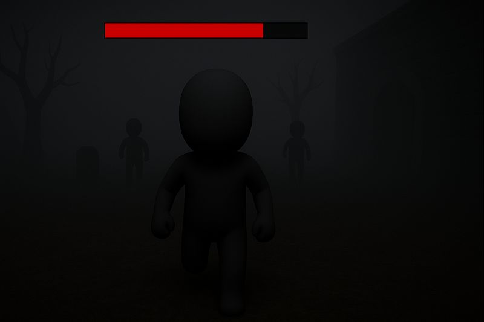

Look Behind – Jeu d’Horreur Solo

Présentation du jeu
Look Behind est un jeu d’horreur solo reposant sur une mécanique de vigilance.
Plusieurs entités hostiles poursuivent le joueur uniquement lorsqu’elles ne sont plus visibles,
générant une tension permanente liée à la gestion du champ de vision.
Mécanique centrale
Tant que les ennemis restent dans le champ de vision du joueur, ils sont immobiles.
Dès qu’ils en sortent, ils se déplacent automatiquement vers lui.
Le regard devient ainsi une ressource de gameplay essentielle, obligeant le joueur
à faire des choix constants entre observation et déplacement.
Défis techniques
- Détection fiable et performante du champ de vision.
- Coordination entre IA, navigation et animations.
- Création d’une tension constante sans surcharge visuelle.
Ressources et outils utilisés
-
Unreal Engine 4 – Utilisation des Blueprints pour la logique de gameplay
et le développement de l’intelligence artificielle.
-
Mixamo – Importation et adaptation des animations de personnages :
https://www.mixamo.com/
-
Blender – Modélisation d’éléments d’environnement simples
afin de construire une scène jouable.
-
Tutoriels de référence – Playlist YouTube utilisée comme support :
Création et animation d’un personnage